1Install the software
- Run Smartech-Typing-Tutor-Setup and follow the installer.
- Choose the folder you want (the default is fine) and keep Create desktop shortcut ticked.
- Open Smartech Typing Tutor from the desktop shortcut or the Start menu.
2First launch: enter your name
The first time the app opens it asks for your name and an optional roll / reference number. Your results and certificates are saved under this name automatically, so you never have to type it before a test.
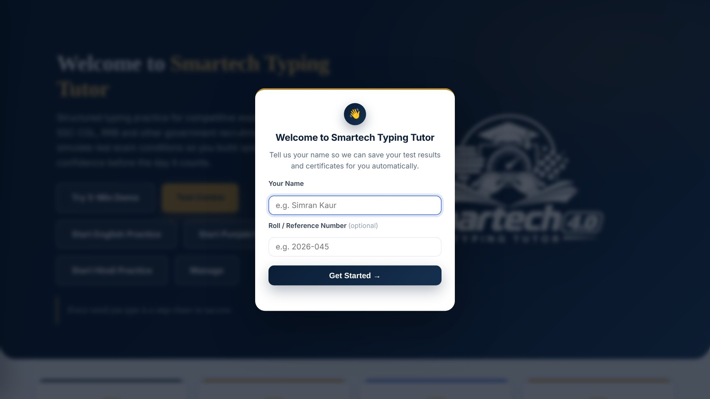
3Activate your courses
Each course (English, Punjabi, Hindi) is unlocked with its own activation code from your institute. Open Activation in the sidebar.
- Type or paste the code for the course into its box.
- Press Activate. An internet connection is needed for this step only.
- The card turns green and shows the expiry date and days remaining.
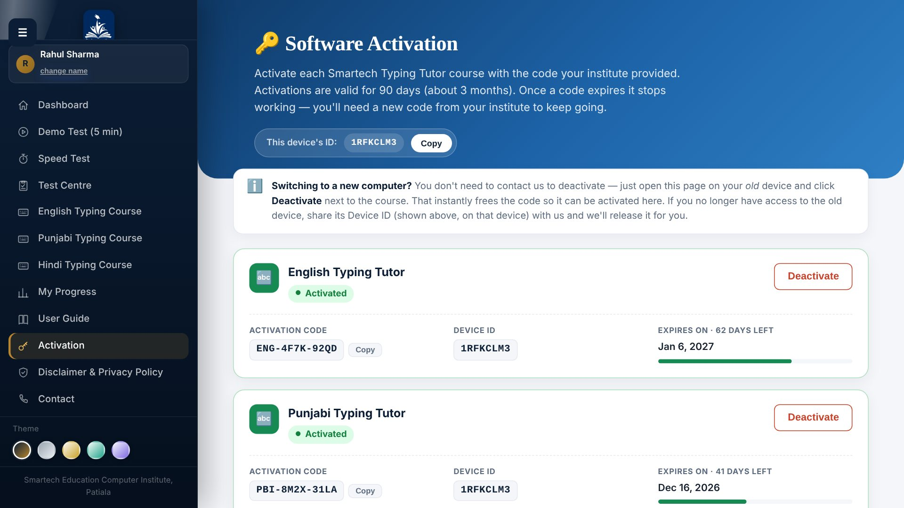
4The Dashboard and the sidebar menu
The Dashboard is your home screen. Use the buttons to try the 5-minute demo, open the Test Centre, or start English, Punjabi or Hindi practice.
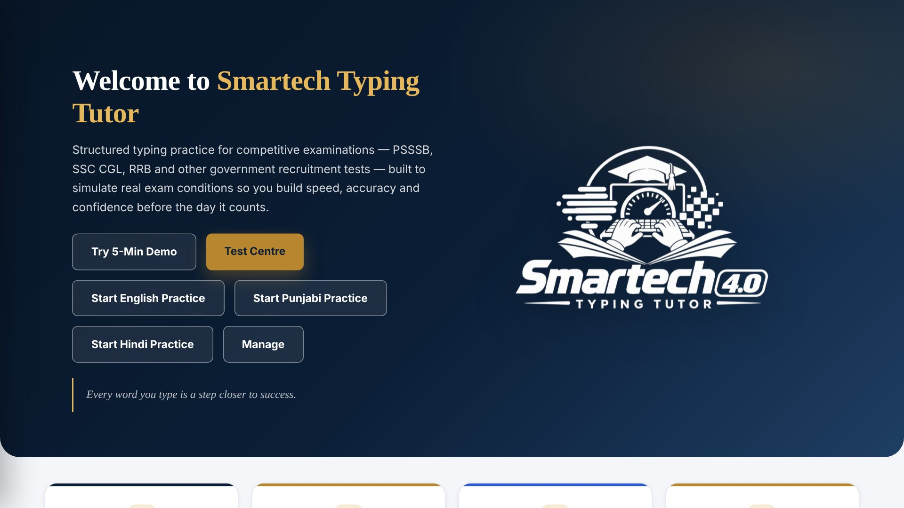
On every other page, open the sidebar with the ☰ button at the top-left. It lists Dashboard, Demo Test, Speed Test, Test Centre, the three typing courses, My Progress, User Guide, Activation, Disclaimer and Contact. Your name and the theme picker are at the top and bottom of the sidebar.
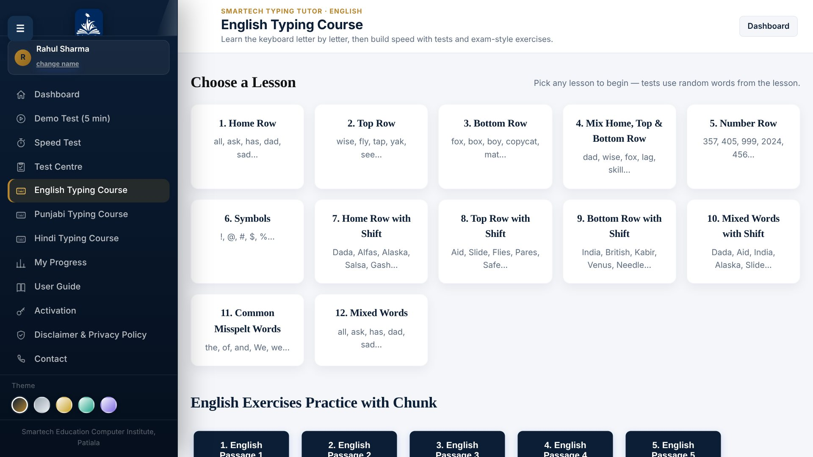
5Pick a lesson
Each course starts with step-by-step lessons: home row, top row, bottom row, numbers, symbols, Shift keys and common words. Choose any lesson to begin. For longer practice texts, open the Exercises pages from the sidebar. For timed practice, use Speed Test, the Demo Test and the Test Centre in the sidebar.
6Typing practice (chunk exercises)
The text to copy is shown in the Reference Text box. Type it in the Typing Text box below, exactly as shown, including capitals and punctuation. The timer at the top starts with your first key, and live counters show your characters, words and backspaces.
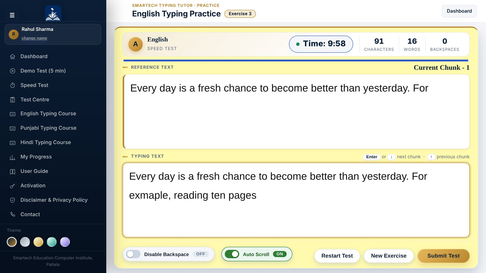
- Chunks: a long text is split into chunks. Press Enter or ↓ to move to the next chunk (you must have typed at least 80% of the current one), and ↑ to go back.
- Disable Backspace: switch it ON to practise without correcting mistakes, as in some exams.
- Auto Scroll: ON by default. The Reference Text scrolls by itself so the word you are typing stays in view. Switch it OFF if you prefer to scroll yourself.
- Restart Test starts the same exercise again. New Exercise goes back to the list. Submit Test ends the test early.
When time ends (or you submit), your result is shown and saved. A Pass automatically creates a certificate. See Your results for how to read it.
7Speed Test
For a quick timed drill, open Speed Test from the sidebar. Pick your language (English, Punjabi or Hindi) and 1 Minute or 5 Minutes, then start typing: the timer begins with your first key. Press Space after each word. Speed, accuracy and word counts update live, and a result card with your WPM appears when time is up.
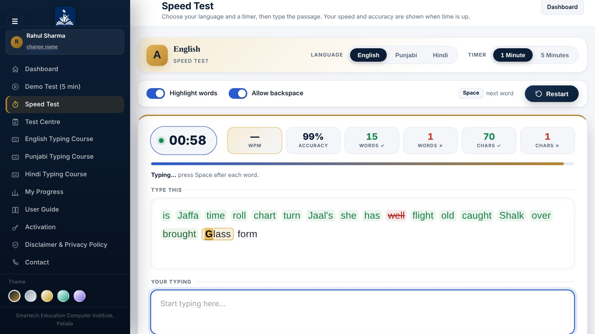
85-minute Demo test
Open Demo Test (5 min) to try a real long-paragraph test in English, Punjabi or Hindi. Pick your language and type for 5 minutes. The result is saved in My Progress for 3 days, but a demo is not a pass / fail exam: no certificate is issued and it is not sent to the leaderboard.
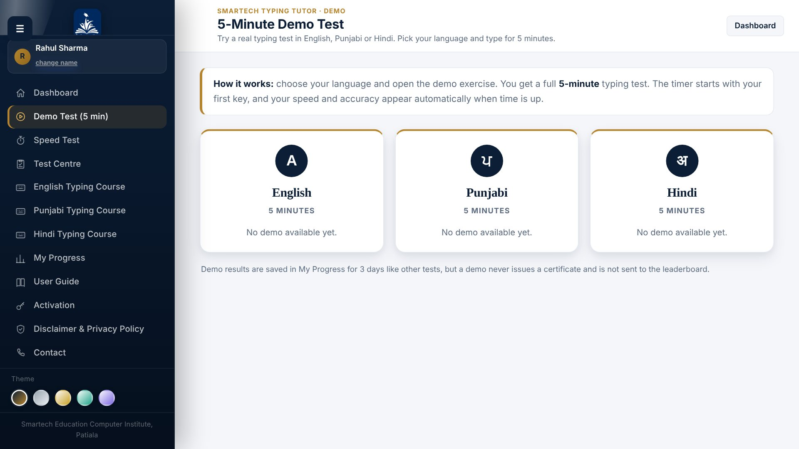
9Test Centre (exam-style tests)
Open Test Centre to take an exam-style test such as SSC CHSL or SSC CGL. Each card shows the test's time, its pass rule (minimum speed and accuracy) and its status:
- Days left: you already have access. Click Open exercises.
- Code needed: open the card and enter the access code your institute gave you for that test.
- Free: no code is needed.
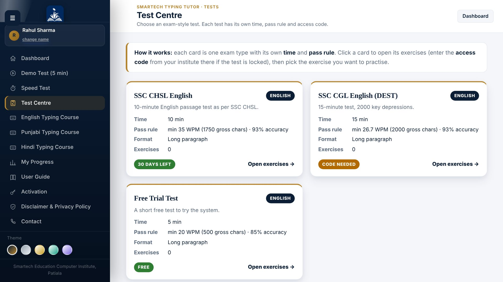
Some tests include more than one language (for example English and Punjabi). Their card shows a badge for each language, and the exercise page lists English and Punjabi as separate blocks, each with its own time, pass rule and exercise numbers. Pick the exercise from the language you want to type.
After opening a test, choose the exercise you want. The test fixes the time and decides Pass or Fail by its own rule: you need the required speed and accuracy. The rule is repeated under your result. Results record the test name, and a Pass creates a certificate for that test.
PHHC (Punjab & Haryana High Court) is judged on the words you type, not on 5 keystrokes per word. Your net words are the words typed minus your mistakes (wrong, extra, skipped or joined / split words), and your result speed is net words divided by the 10 minutes. You pass with 300 net words in 10 minutes (30 words per minute).
language: English, Punjabi in its ### TEST block and tag each exercise with its language (optional own rule per language, e.g. punjabi-wpm: 30); see test_types_format.txt. Use Manage on the Dashboard to see every test and exercise and to print them on A4 sheets with the Smartech Education header.10Long paragraph exercises
For full exam-style passages, open Long Paragraph Practice from a course page and choose an exercise. New exercises are added by your institute and download automatically when the computer is online. They are kept on the computer so they still work offline.
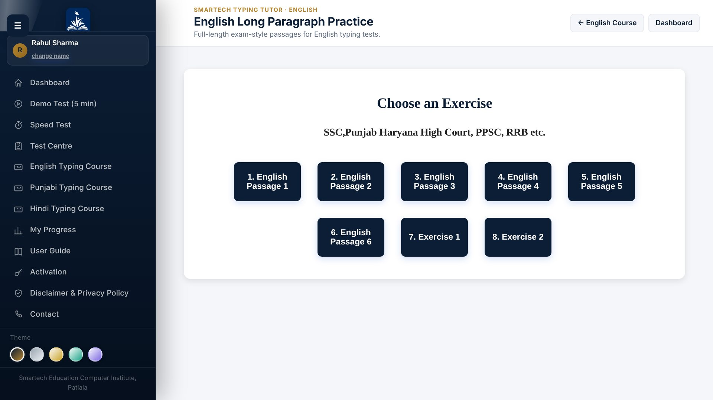
The test screen shows the whole passage in the Reference Text box and your typing box right below it. A Test Centre test shows its name and time next to the heading.
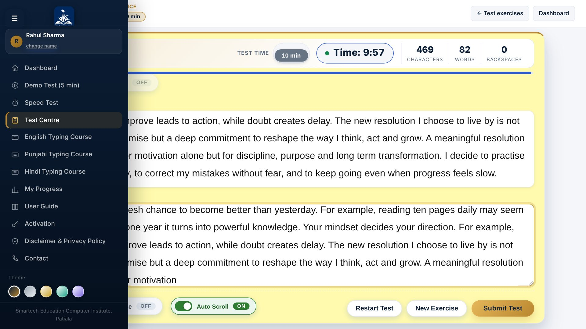
- Test mode: On-Screen (default) shows the passage above the typing box. Switch to Paper-Based to hide it and type from a printed paper; Print Paper prints the passage as a question sheet. The mode is locked while a test is running.
- Disable Backspace and Auto Scroll work the same as in chunk exercises.
- Once time is over, the test cannot be resumed and the typed text cannot be edited.
11Understanding your result
When the test ends, the Results table shows the exercise, test mode, gross characters, the error counts, gross and actual speed, time taken, accuracy and backspace count, plus the Pass / Fail rule.
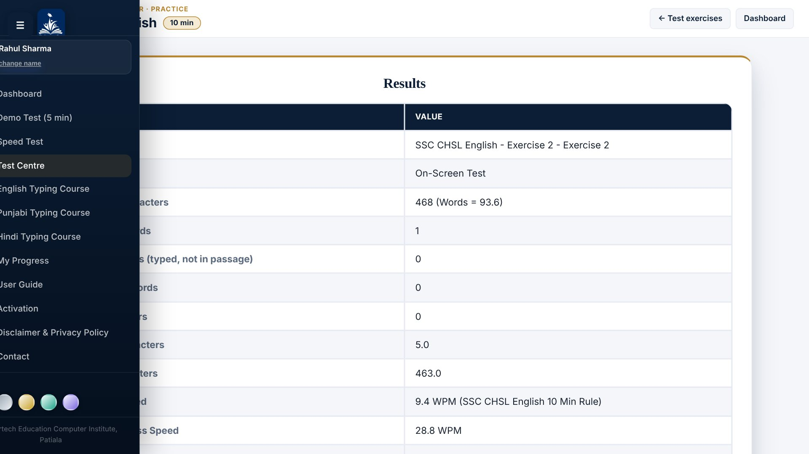
| Item | Meaning |
|---|---|
| Gross characters | Characters you typed correctly, plus the spaces between your words. |
| Wrong words | Words you typed differently from the passage. |
| Extra words | Words you typed that are not in the passage. |
| Skipped words | Passage words you missed between words you typed. |
| Space errors | Missing spaces (two words joined) or extra spaces. |
| Error characters | 5 characters for every wrong, extra or skipped word, plus 2.5 for every space error. |
| Net characters | Gross characters minus error characters. |
| Accuracy | Net characters ÷ gross characters × 100 (never shown below 0%). |
Scroll down to see the Original Text next to your Typed Text, with every mistake marked.
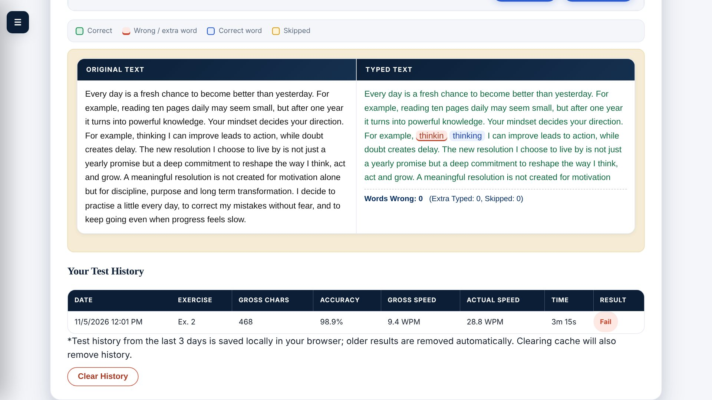
12Track your progress and certificates
Open My Progress to see the tests you have taken in the last 3 days (older results are removed automatically): which exercise it was, speed, accuracy and result. Best speed and average accuracy are shown for each language. Earned certificates are listed on the same page, and you can export the history to a CSV file that opens in Excel.
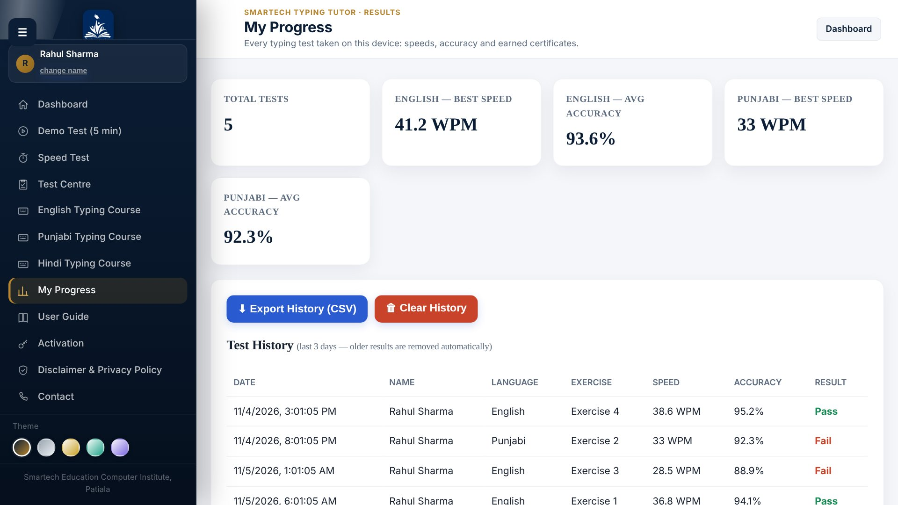
13Change the look
At the bottom of the sidebar, pick one of five colour themes: Ink & Gold, Silver Steel, Pearl Ivory, Mint Fresh or Lavender Mist. Your choice is remembered. Use Ctrl + + / - to make everything larger or smaller, and Ctrl + 0 to reset.
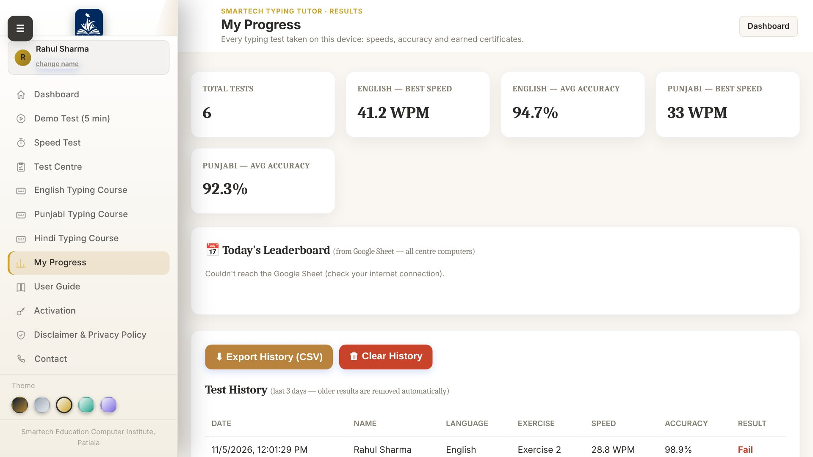
14Handy shortcuts
| Key | What it does |
|---|---|
| F11 | Full screen on or off (recommended for tests) |
| Ctrl + + / - | Zoom in / out |
| Ctrl + 0 | Reset zoom |
| Enter / ↓ | Next chunk (chunk exercises) |
| ↑ | Previous chunk (chunk exercises) |
| Space | Finish a word in Speed Test |
| ☰ button | Open or close the sidebar menu |
Note: copy, paste, text selection and right-click are switched off inside the app on purpose, to match real exam conditions.
15Questions and troubleshooting
| Problem | What to do |
|---|---|
| "Invalid activation code" | Check the code for typing mistakes and make sure you used the code for the right course or test. |
| "Already activated on another computer" | Deactivate it on the old computer, or contact your institute with your Device ID. |
| Course asks to activate again | The 90-day activation has ended. Ask your institute for a new code. |
| A Test Centre test says "Code needed" or is locked | Open the test and enter its access code. If the code was blocked or has expired, ask your institute for a new one. |
| Activation fails | Check the internet connection. Activation and the leaderboard are the only parts that need it. |
| The Test Centre or exercise list is empty | Connect to the internet once so the exercises can download. After that they work offline. |
| Punjabi or Hindi letters do not appear | Add the language and keyboard layout in Windows Settings > Time & Language, then switch to it with Alt + Shift. |
| I cannot change Test Mode in the middle of a test | It is locked while a test runs. Press Restart Test, then change it. |
| Leaderboard is empty | It needs an internet connection. Your own results are always saved on the computer. |
Still stuck? Open Contact and email us with your Device ID and a short description.